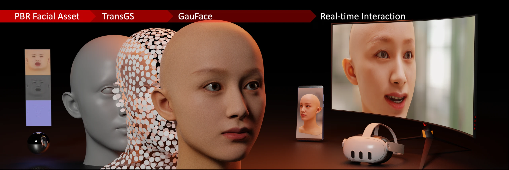

Instant Gaussian Splatting Generation for High-Quality and Real-Time Facial Asset Rendering
Research overview
TransGS converts physically based facial assets into GauFace, a structured Gaussian representation designed for efficient animation and rendering. A diffusion transformer processes patches of the asset, using UV information and aligned sampling to preserve fine visual detail. This approach connects existing facial asset workflows with interactive rendering across desktop, mobile, and virtual-reality platforms.
Summary · Read original ↗01 / 01
